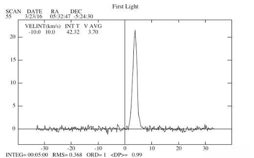
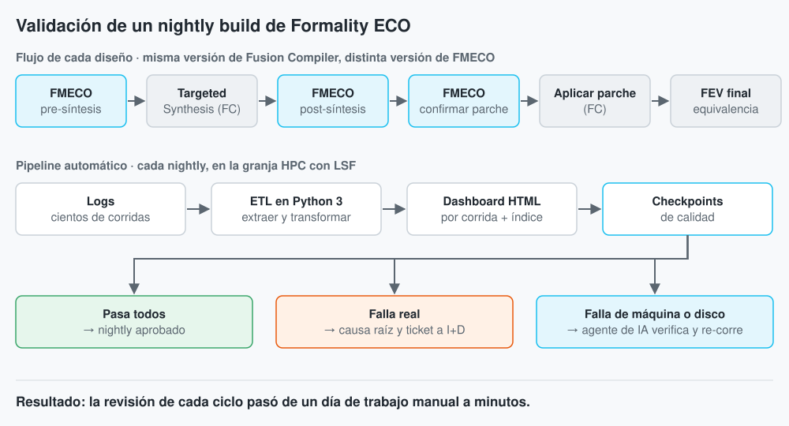
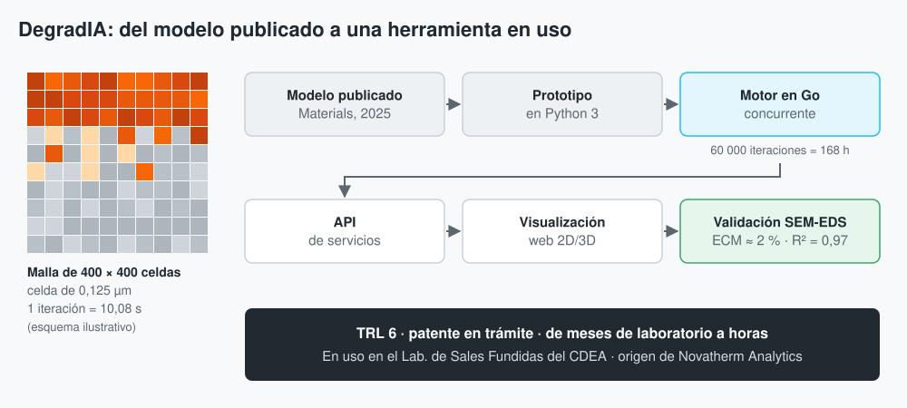

October 08, 2022
In this portfolio are presented two Data Science projects: EDA pima indians to demonstrate Exploratory Data Analysis, Statistics, Data Visualization, and Music Recommendation System to demonstrate advanced knowledge in Applied Data Science.
 2015 – 2016 · Case study
2015 – 2016 · Case study
FPGA back-end that digitally separates the sidebands of an 80–116 GHz receiver: over 40 dB of rejection, double the bandwidth, and first light on the Orion Nebula. (In Spanish.)

2023 – 2026 · Case study
Automated validation of every Formality ECO nightly build at Synopsys, using Python ETL, an HPC farm and an AI agent. Review time per cycle went from a full day to minutes. (In Spanish.)

2025 · Case study
Go and Python platform that simulates steel corrosion in molten solar salt. Validated against SEM-EDS (R² = 0.97), now used by a research lab, and the seed of Novatherm Analytics. (In Spanish.)

October 19, 2026
Step-by-step guides (in Spanish) for my RTL-SDR Blog V4L station in Santiago: FM band scans, Meteor weather satellite recordings, and ISDB-Tb digital TV measurements.


The Meme Generator project contains a Flask APP and a CLI APP that dynamically generate memes.

Final project about a Quad Detector. It is particularly useful in laser beam alignment, position monitoring and beam stabilization applications. The detector head outputs signals that sense the position and intensity of the light beam hitting the photo detector array.

Prototype of a file importer based on Strategy Object Pattern implemented in Python 3.10